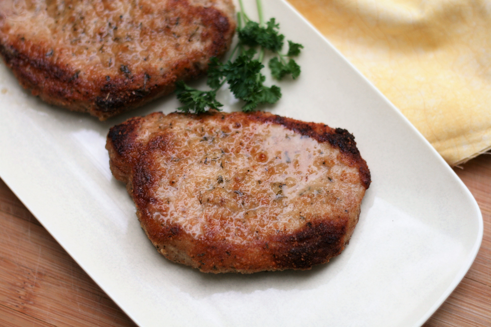

Parmesan Baked Pork Chops

These were some of the best pork chops. Moist and tender with amazing flavor.
Ingredients
- nonstick cooking spray
- 1 cup grated Parmesan cheese
- 1 cup Italian seasoned bread crumbs
- 1 teaspoon ground black pepper
- 1 teaspoon garlic powder
- 4 (5 ounce) boneless center-cut pork chops, 1/2-inch thick
- 1 tablespoon olive oil
Steps
- Preheat the oven to 350 degrees F (175 degrees C). Line a baking dish with aluminum foil and spray with cooking spray.
- Combine Parmesan cheese, bread crumbs, pepper, and garlic powder in a bowl.
- Rub pork chops with olive oil and dip in the Parmesan mixture. Press mixture into pork chops to make sure they are well coated. Transfer to the prepared baking dish.
- Bake in the preheated oven until pork chops are no longer pink in the center, 40 to 45 minutes. An instant-read thermometer inserted into the center should read 145 degrees F (63 degrees C).